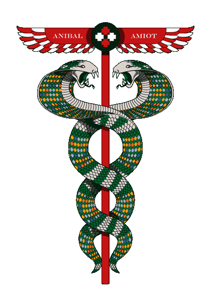

Tirage — Ordre chronologique des 64 mutations
Trigramme supérieur (poids 32·16·8) / trigramme inférieur (poids 4·2·1) — construction du bas vers le haut
Échiquier
00 → 63
Lignes = trigramme supérieur (0 à 7, haut en bas) · Colonnes = trigramme inférieur (0 à 7, gauche à droite) · N° = ligne×8 + colonne
Traits — symbolique traditionnelle

Cliquez une case de l'échiquier pour consulter un hexagramme,ou tirez aux pièces pour une lecture — avec, le cas échéant, ses traits mutants et l'hexagramme qui en résulte.
© 2026 Anibal Edelberto Amiot — Tous droits réservés
·
Créé en collaboration avec Claude
Hébergé par https://gk2.net – l'internet des créatifs